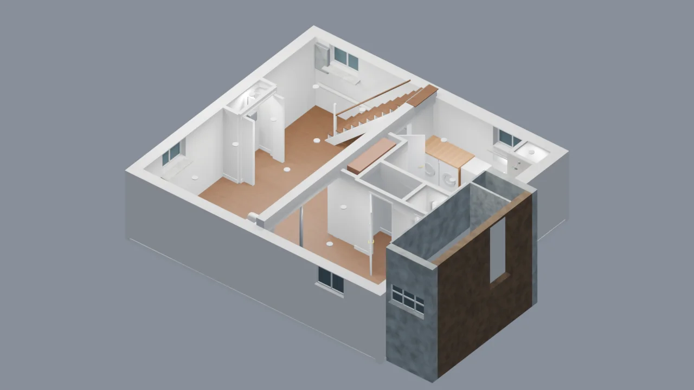

House models

Upstairs: two bathrooms
A second bathroom, pocket doors and a reworked primary suite—with the existing bed, nightstands and blue rug.
Explore model →
Kitchen & dining renovation
Open the kitchen toward dining, with a two-seat bar in the old hutch footprint, a farmhouse sink and tall storage.
Explore model →
Exterior & site
The gambrel roof, dormers, office bay, rear sunroom, patio, driveway and surrounding site.
Explore model →
Upstairs: existing layout
Three bedrooms, the current bathroom, primary closet and landing, with the recorded upstairs measurements.
Explore model →
Main floor
Kitchen, dining room, living room, entry, sunroom, powder room and side office in the current connected model.
Explore model →
Basement: existing unfinished
The unfinished basement with owner-measured spans and heights, current utilities, laundry, exposed structure and both stair routes.
Explore model →
Basement renovation: Option 2
Option 2 fitted to the measured basement, with living space, bathroom, laundry and utility closets.
Explore model →